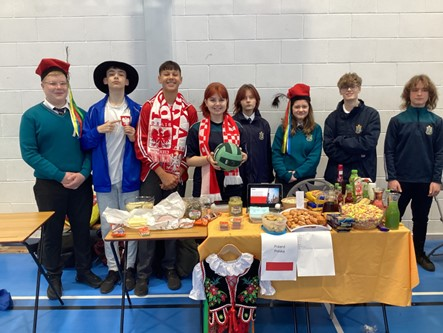

SMC Celbrated Multicultural Day
Published on: 22/12/2023
Written by Cathriona Walsh

Students representing Poland and their stand during the multicultural day.
The students of Sancta Maria college began preparing, decorating and putting together their stands for multicultural day. In total there were
23 counties represented. Examples of countries that are being presented are: Bulgaria, South Africa, America, Pakistan, Spain, Poland.
A bake sale was run by first years during the event with special help from A3 and Mrs Cannon. The 2nd year B3 class held a raffle to guess
how many sweets filled up three different sized jars. The money raised went towards the Irish charity Bronntanas.
I interviewed a couple of the stalls and asked them some questions. First I asked Russia about something interesting about their capital of
their country. They said that Moscow is actually the biggest European capital.
Next I asked the Netherlands for a fact about their country and if they felt proud of their country. They then said the Netherlands was kept from
flooding by water pumps surrounding the country and they were proud of the engineering in the Netherlands.
I asked Belgium what their capital of their country is and a traditional food they like. Belgium responded by saying the capital of their country
is Brussels and a traditional food they like is mussels in a white wine sauce dish.
Speaking to the Estonia stand, I was told that their country only gained independence roughly 30 years ago.
I spoke to Pakistan and they said that it isn't a popular country but they feel it's one of the strongest countries.
I chatted to Germany, they said that they have a good football team and they believe their culture is cool and interesting.
I went over to Italy, they then told me if you are a child in Italy around christmas time you have to cook dinner for the family.
I lastly asked South Africa about their country and they said one euro is equal to 20 rand which is a lot of money and the capital of their country
is Johannesburg.